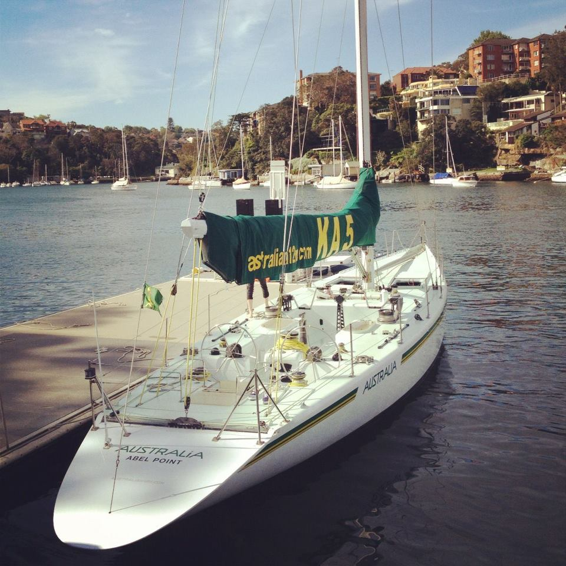

What is the Americas Cup
The America's Cup is the oldest and most prestigious yacht race globally, dating back to 1851. It's all about two teams, the defender and the challenger, battling head-to-head in super advanced sailboats. These boats are high-tech machines, using cutting-edge designs and materials to sail faster and smoother than ever before. The races happen in different places worldwide, often drawing huge crowds because of the thrilling speed and close competition. Winning the America's Cup isn't just about sailing skills; it's also about big investments in technology and strategy, making it a symbol of innovation and excellence in sailing.
Americas Cup History
The story of the Cup.
The Cup was manufactured in 1848, the fourth oldest sporting trophy of any kind. The cup was first called the "RYS £100cup". The first race was in 1851 it was between the New York Yacht Club's America boat and the 15 yachts of the Royal Yacht Squadron, this is considered the first American Cup race. After numerous years, the remaining members of the America syndicate donated the cup to the New York Yacht Club and made them agree to some rules. The rules state that "the cup is donated upon the condition that it shall be preserved as a perpetual challenge cup for friendly competition between foreign countries.

Win Streak
New York Yacht Club held the cup from 1857 until 1983 when they successfully defended the trophy 24 times over 132 years. The Australians finally beat the Americans in 1831 using the Australian's new keel design.

